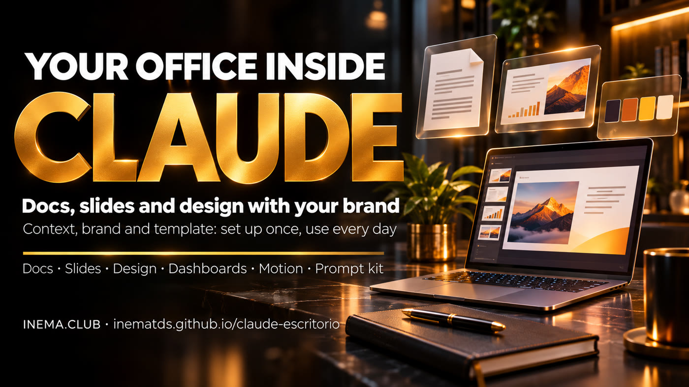

Documents, presentations, and designs that look like your company, created in a conversation — three of them even on the free plan. Set it up once in 4 steps and stop starting from scratch.

This is a free kit for using Claude as your office: write documents, build presentations, create designs, and, on some plans, data dashboards and animations. It is for people working solo or in small teams who are tired of explaining their brand and business every time. The kit includes a “who I am” template to paste into a Claude Project, ready-to-use prompts for each tool, and a checklist of what each plan includes. All you need is a Claude account (the free plan already works for Docs, Slides, and Design) and a browser.
Artifacts is what Claude calls the things you create with it and save: documents, presentations, designs, dashboards. They live in the Artifacts tab (in the left menu on claude.ai, or directly at claude.ai/artifacts). Choose a template there, or just ask in the conversation. Your creations are private until you share them, and can be exported as PowerPoint, Google Slides, PDF, MP4, or HTML.
A good tool without context produces generic work. The kit starts with a Project that tells Claude who you are, what you sell, and how you communicate.
A design system — the “brand guide” Claude saves and uses automatically: colors, fonts, logo, and style — created from a PDF, screenshots of your website, or your logo. One source is enough to get started; from then on, everything looks like your brand.
Your first proposal or report that turns out well becomes a template. The next ones build on it, with the same structure and visual style.
Official names: Claude Docs, Claude Slides, Claude Design, Claude Dashboards, and Claude Motion. Verified on Anthropic’s pages on Nov 4, 2026.
Documents you create alongside Claude and your team, in real time.
Presentations built from notes, reports, or what is already in the conversation.
Posts, flyers, one-pagers, sales pages, and prototypes using your design system.
Ask a question in plain English and get an updating dashboard connected to your database or sales system (CRM, such as Salesforce).
A short animation built with code that plays like a video and can be downloaded as an MP4.
Private by default; invite others to “view” or “edit.” Edit on mobile. Anthropic says more than 45 million docs, decks, and designs have already been made in Claude.
Set it up once, use it every day. Steps 1 and 2 take an afternoon; repeat steps 3 and 4 every week.
Nothing to install. Everything happens in your browser or in the Claude app.
The free plan already includes Docs, Slides, and Design. Dashboards requires a paid plan; Motion requires Team or Enterprise. See the plan comparison.
A PDF or presentation you like, screenshots of your website, or your logo. One source is enough to get started.
A proposal, report, or post you create every week. That will become your first template.
Each step has a ready-to-use file in the kit. Click the filename, use the Copy raw file button (two-page icon) on GitHub, replace the text in [square brackets], and paste it into Claude.
On claude.ai, open Projects (left menu) › New project. Inside the Project, there is an Instructions field: paste the completed template from kit/contexto/instrucoes-do-projeto.md there. Don’t want to fill it in yourself? Use the prompt that asks Claude to interview you. To see a completed example, open the completed example (a consulting practice for clinics). Also upload 2 or 3 reference files (a sales presentation, a successful proposal).
# kit/prompts/01-entrevista-contexto.md (excerpt) I want to create instructions for a Project in Claude so you can work as my office assistant. Interview me. - Ask one short question at a time, and wait for my answer. - Cover: who I am; what I offer; my clients and their objections; real proof; how I communicate; my brand. - Don’t make anything up. Leave out anything I don’t know.
In a chat inside your Project, attach your brand PDF, website screenshots, or logo and ask for a design system. Claude extracts colors, fonts, logo usage, and style. It’s an approximation: check the colors once using the kit/design-system-modelo.md worksheet. Later, to view or edit it: in Claude Settings, look for Design systems (in the English app, go to Settings › Capabilities).
# kit/prompts/02-design-system.md (excerpt) I attached my brand PDF. Create a design system for my brand. 1. Extract: palette (code and usage for each color), fonts, logo on light and dark backgrounds, spacing, corners, icon and photo styles. 2. Show me a sample: presentation cover, slide, square post, button. 3. List what you could NOT find in the files and ask me before making anything up.
Choose a tool based on the deliverable. The biggest time-saver: from meeting to proposal. Paste your meeting notes, ask Claude to research the client’s website, and create a proposal with the client’s logo on the cover — not yours.
# kit/prompts/03-slides-proposta.md (excerpt) Create a slide proposal for [CLIENT], using my design system. 1. First, show me the outline and wait for my OK. 2. Research the public website at [client.com] and list 3 questions that still need answers. 3. Put the CLIENT’S name and logo on the cover. 4. Problem → what changes → how we do it → timeline → investment → next step. 5. No more than 10 slides, with speaker notes. Don’t make up numbers.
Other deliverables: a document with a colleague’s Claude (04-docs-colega.md), a post or sales page (05-design-peca.md), a metrics dashboard (06-dashboard-numeros.md), and an animation (07-motion-explicativo.md).
Once a deliverable is approved, ask Claude to describe its structure and save it in the Project as “Proposal template,” for example (in the Project, add a file with that text; if it is short, paste it into the Instructions). From then on, just ask for “another one like the template” and change what’s new. Share it with your team, with “view” or “edit” access.
# kit/prompts/08-reusar-modelo.md (excerpt) New proposal for [client], just like the “Proposal template.” What’s changing: [notes from the new meeting]. Show me only what changed from the template before building the whole thing.
A good dashboard answers one question: “Am I getting there?” Separate the number you want to reach from the numbers you can influence today.
| Business | Outcome metric (the end result) | Driver metrics (what you can influence) |
|---|---|---|
| Clinic | Appointments completed this month | New appointments scheduled · no-shows confirmed the day before · follow-up visits booked |
| Consulting practice | Revenue this month | Meetings held · proposals sent · proposals answered |
| Online store | Paid orders | Visits · open carts · recovered carts |
| Video channel | Subscribers | Videos published per week · views per video |
Illustrative examples. Before sharing the dashboard, click each number and check the query and its last updated date: Anthropic has not published query accuracy rates.
Not sure which plan you have? Settings › Plan. Verified on Nov 4, 2026, at claude.com/features/artifacts and in the Claude Help Center. Plans change: check claude.com/pricing.
| Tool | Free | Pro / Max / Ultra | Team | Enterprise |
|---|---|---|---|---|
| Docs | ✅ yes | ✅ yes | ✅ yes | ✅ yes |
| Slides | ✅ yes | ✅ yes | ✅ yes | ✅ yes |
| Design + design system | ✅ yes | ✅ yes | ✅ yes | ✅ yes |
| Dashboards | ❌ no | 🧪 beta | 🧪 beta | 🧪 beta (owner enables it) |
| Motion | ❌ no | ❌ no | 🧪 beta | 🧪 beta (owner enables it) |
The separate claude.ai/design site shuts down on Dec 14, 2026. If you have a design system there, migrate it from the Artifacts page (“Migrate team design systems”).
“Make a slide about my service” without a Project gets you a slide that could belong to any company. Do step 1 first.
Fake numbers, testimonials, or clients destroy trust. The instruction “don’t make things up; ask me” is already in the template.
For client materials, the cover belongs to them: their name and logo. Put yours at the end.
Dashboards shows the query behind each number. Click and check before sending it to anyone.
Turn the approved deliverable into a template (step 4). That’s where the time savings come from.
Everything starts private. Invite only the people who need access, with “view” or “edit” permissions.
Click a filename to open it on GitHub. Use the Copy raw file button (two-page icon in the upper-right corner above the text), then paste into Claude. You don’t need a GitHub account.
| File | Purpose |
|---|---|
kit/contexto/instrucoes-do-projeto.md | “Who I am” template for Project Instructions (step 1) |
kit/contexto/exemplo/instrucoes-clinica.md | The same template filled out with a fictional example |
kit/prompts/01-entrevista-contexto.md | Claude interviews you and writes the context |
kit/prompts/02-design-system.md | Turn your brand into a design system (step 2) |
kit/design-system-modelo.md | Worksheet for checking colors, fonts, and logo |
kit/prompts/03-slides-proposta.md | From meeting to slide proposal |
kit/prompts/04-docs-colega.md | A document with a colleague’s Claude + weekly routine |
kit/prompts/05-design-peca.md | A post, flyer, or sales page with your brand |
kit/prompts/06-dashboard-numeros.md | Choose metrics and build the dashboard |
kit/prompts/07-motion-explicativo.md | Turn a report into a 30-second animation |
kit/prompts/08-reusar-modelo.md | Turn the approved deliverable into a template (step 4) |
kit/checklist-planos.md | What your plan includes + pre-sharing checklist |
The 5 tools and the 4-step method in 2 min 32 s (in Portuguese).
Short version (reel) on Instagram and TikTok: @inema.tds